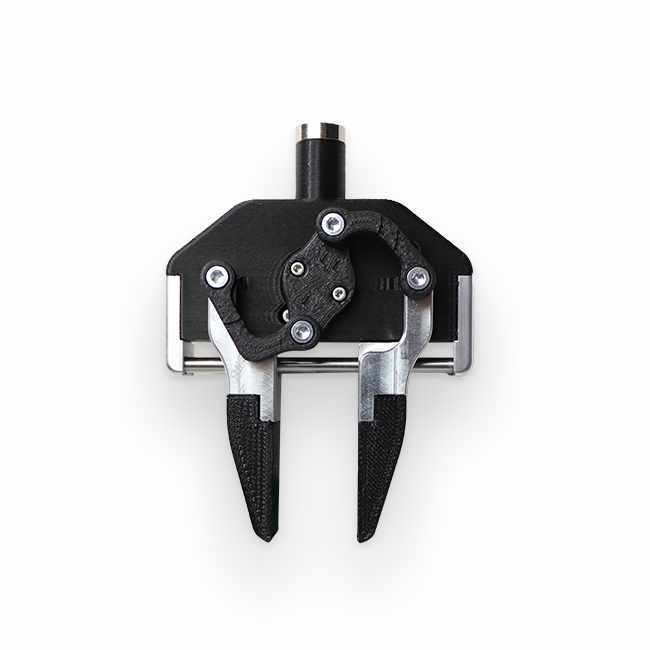
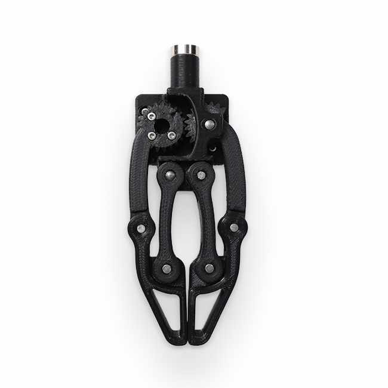
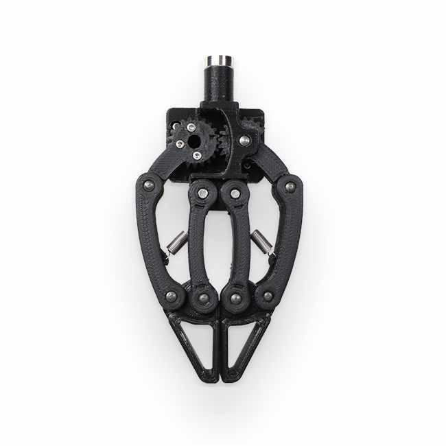
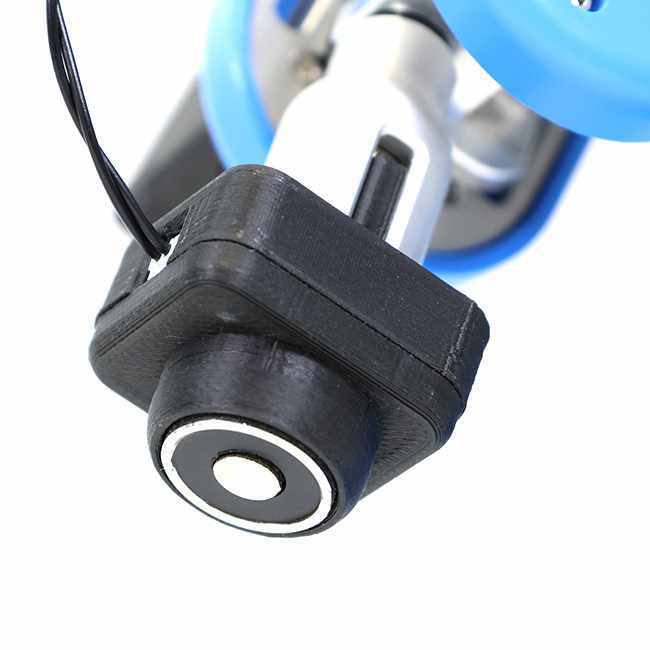
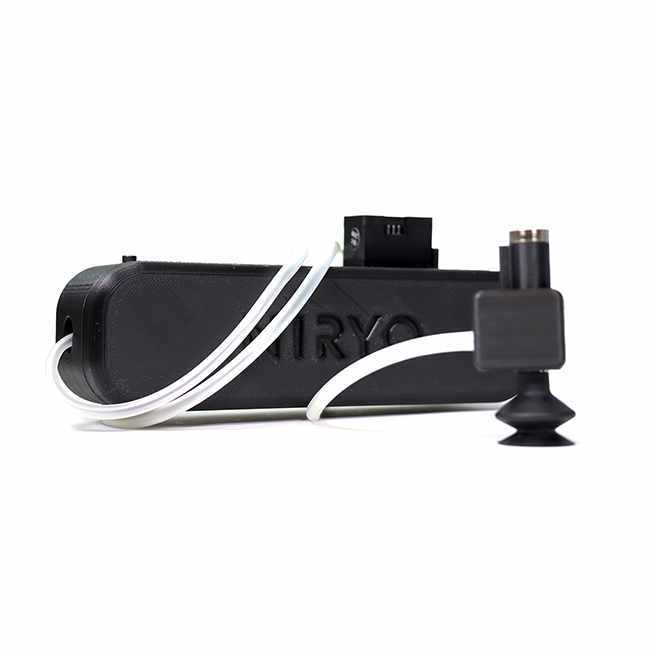
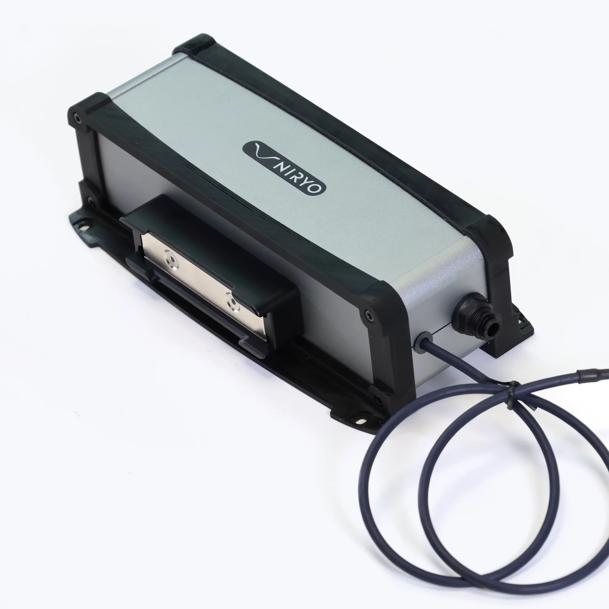

Niryo robot tools commander
Provides functionalities to setup, control and get feedbacks from the end-effector and accessories for Ned robots.
This package allows to manage the TCP (Tool Center Point) of the robot. If the functionality is activated, all the movements (in Cartesian coordinates [x, y, z, roll, pitch, yaw]) of the robot will be performed according to this TCP. The same program can then work with several tools by adapting the TCP transformation to them. By default this feature is disabled, but can be enabled through a service.
It belongs to the ROS namespace: /niryo_robot_tools_commander.
Tool IDs
Each Niryo tool is bound to a specific ID in order to be correctly recognised on the TTL bus.
Here is the list of the tools and their corresponding IDs:
Name |
ID |
Image |
|---|---|---|
Standard gripper |
11 |
 |
Large gripper |
12 |
 |
Adaptive gripper |
13 |
 |
Electromagnet |
30 |
 |
Vacuum pump |
31 |
 |
Vacuum pump v2 |
32 |
 |
{kind=link}
{kind=link}
{kind=link}
{kind=link}
{kind=link}
{kind=link}
Tools commander API functions
Tools commander ROS wrapper
In order to control the robot more easily than calling each topics & services one by one, a Python ROS Wrapper has been built on top of ROS.
For instance, a script playing sound via Python ROS Wrapper will looks like:
from niryo_robot_tools_commander.api import ToolsRosWrapper, ToolID
tools = ToolsRosWrapper()
tools.update_tool() # Detect and equip the current tool
tools.open_gripper() # Supposing you have connected a gripper
API list
- class niryo_robot_tools_commander.api.tools_ros_wrapper.ToolsRosWrapper(service_timeout=0.2)
Bases:
AbstractNiryoRosWrapper- activate_electromagnet(pin_id)
Activates electromagnet associated to electromagnet_id on pin_id
- Parameters:
pin_id (PinID) – Pin ID
- Returns:
status, message
- Return type:
(int, str)
- close_gripper(speed=500, max_torque_percentage=100, hold_torque_percentage=50)
Closes gripper with a speed ‘speed’
- Parameters:
speed (int) – Default -> 500
max_torque_percentage (int) – Default -> 100
hold_torque_percentage (int) – Default -> 20
- Returns:
status, message
- Return type:
(int, str)
- deactivate_electromagnet(pin_id)
Deactivates electromagnet associated to electromagnet_id on pin_id
- Parameters:
pin_id (PinID) – Pin ID
- Returns:
status, message
- Return type:
(int, str)
- enable_tcp(enable=True)
Enables or disables the TCP function (Tool Center Point). If activation is requested, the last recorded TCP value will be applied. The default value depends on the gripper equipped. If deactivation is requested, the TCP will be coincident with the tool_link.
- Parameters:
enable (bool) – True to enable, False otherwise.
- Returns:
status, message
- Return type:
(int, str)
- get_current_tool_id()
Uses /niryo_robot_tools_commander/current_id topic to get current tool id
- Returns:
Tool Id
- Return type:
- get_tcp()
Returns the TCP state :return: the tcp (enabled, position and orientation) :rtype: Tool msg object
- grasp_with_tool(pin_id='')
Grasps with the tool linked to tool_id. This action corresponds to - Close gripper for Grippers - Pull Air for Vacuum pump - Activate for Electromagnet
- Parameters:
pin_id (PinID) – [Only required for electromagnet] Pin ID of the electromagnet
- Returns:
status, message
- Return type:
(int, str)
- open_gripper(speed=500, max_torque_percentage=100, hold_torque_percentage=20)
Opens gripper with a speed ‘speed’
- Parameters:
speed (int) – Default -> 500
max_torque_percentage (int) – Default -> 100
hold_torque_percentage (int) – Default -> 20
- Returns:
status, message
- Return type:
(int, str)
- pull_air_vacuum_pump()
Pulls air
- Returns:
status, message
- Return type:
(int, str)
- push_air_vacuum_pump()
Pulls air
- Returns:
status, message
- Return type:
(int, str)
- release_with_tool(pin_id='')
Releases with the tool associated to tool_id. This action corresponds to - Open gripper for Grippers - Push Air for Vacuum pump - Deactivate for Electromagnet
- Parameters:
pin_id (PinID) – [Only required for electromagnet] Pin ID of the electromagnet
- Returns:
status, message
- Return type:
(int, str)
- reset_tcp()
Resets the TCP (Tool Center Point) transformation. The TCP will be reset according to the tool equipped.
- Returns:
status, message
- Return type:
(int, str)
- set_tcp(x, y, z, roll, pitch, yaw)
Activates the TCP function (Tool Center Point) and defines the transformation between the tool_link frame and the TCP frame.
- Parameters:
x (float) –
y (float) –
z (float) –
roll (float) –
pitch (float) –
yaw (float) –
- Returns:
status, message
- Return type:
(int, str)
- setup_electromagnet(pin_id)
Setups electromagnet on pin
- Parameters:
pin_id (PinID) – Pin ID
- Returns:
status, message
- Return type:
(int, str)
- tool_reboot()
Reboots the motor of the tool equipped. Useful when an Overload error occurs. (cf HardwareStatus)
- Returns:
status, message
- Return type:
(int, str)
- update_tool()
Calls service niryo_robot_tools_commander/update_tool to update tool
- Returns:
status, message
- Return type:
(int, str)
- class niryo_robot_tools_commander.api.tools_ros_wrapper_enums.ToolID
Bases:
objectTools IDs (need to match tools ids in niryo_robot_tools_commander package)
- ELECTROMAGNET_1 = 30
- GRIPPER_1 = 11
- GRIPPER_2 = 12
- GRIPPER_3 = 13
- GRIPPER_4 = 14
- NONE = 0
- VACUUM_PUMP_1 = 31
- VACUUM_PUMP_2 = 32
Package Documentation
ROS Topics
Publishers
Topic Name |
Type |
Description |
|---|---|---|
/niryo_robot_tools_commander/current_id |
Publish the current detected tool ID |
|
/niryo_robot_tools_commander/tcp |
Publish the TCP (Tool Center Point) state (enabled/disabled) and transformation between the tool_link and the TCP. |
|
/rosout |
N/A |
|
/tf_static |
N/A |
Subscribers
Topic Name |
Type |
Description |
|---|---|---|
/niryo_robot_hardware/tools/motor |
tools_interface/Tool |
Publish informations about the tool’s motor (ID, motor type, position, state) |
/tf |
N/A |
|
/tf_static |
N/A |
ROS Services
Service Name |
Type |
Description |
|---|---|---|
/niryo_robot_tools_commander/enable_tcp |
Enable or disable the TCP (Tool Center Point) functionality. When we activate it, the end-effector transform will be the last one saved since the robot started. By default it will be the one of the equipped tool. |
|
/niryo_robot_tools_commander/equip_electromagnet |
Equip the electromagnet with the motor ID given as parameter |
|
/niryo_robot_tools_commander/get_loggers |
roscpp/GetLoggers |
N/A |
/niryo_robot_tools_commander/reset_tcp |
Reset the TCP (Tool Center Point) transform. By default it will be the one of the equipped tool. |
|
/niryo_robot_tools_commander/set_logger_level |
roscpp/SetLoggerLevel |
N/A |
/niryo_robot_tools_commander/set_tcp |
Activate the TCP (Tool Center Point) functionality and defines a new TCP transformation. |
|
/niryo_robot_tools_commander/tf2_frames |
N/A |
|
/niryo_robot_tools_commander/update_tool |
Ping/scan the TTL bus for a dxl motor flashed with an ID corresponding to a Niryo tool and equip it (if found) |
ROS Parameters
Parameter Name |
Default value |
Simulation value |
Unit |
Description |
|---|---|---|---|---|
/niryo_robot_tools_commander/command_list/activate_digital_io |
21 |
N/A |
int |
ID of the command to activate the digital IO of the electromagnet |
/niryo_robot_tools_commander/command_list/close_gripper |
2 |
N/A |
int |
ID of the command to close the gripper |
/niryo_robot_tools_commander/command_list/deactivate_digital_io |
22 |
N/A |
int |
ID of the command to deactivate the digital IO of the electromagnet |
/niryo_robot_tools_commander/command_list/open_gripper |
1 |
N/A |
int |
ID of the command to open the gripper |
/niryo_robot_tools_commander/command_list/pull_air_vacuum_pump |
10 |
N/A |
int |
ID of the command to pull air from the vacuum pump |
/niryo_robot_tools_commander/command_list/push_air_vacuum_pump |
11 |
N/A |
int |
ID of the command to push air to the vacuum pump |
/niryo_robot_tools_commander/command_list/setup_digital_io |
20 |
N/A |
int |
ID of the command to setup the digital IO of the electromagnet |
/niryo_robot_tools_commander/gazebo |
False |
N/A |
bool |
Whether the tool should be simulated in gazebo or not |
/niryo_robot_tools_commander/hardware_version |
ned2 |
N/A |
string |
Hardware version of the robot |
/niryo_robot_tools_commander/initialized |
True |
N/A |
bool |
Whether the tool commander is initialized or not |
/niryo_robot_tools_commander/log_level |
INFO |
N/A |
N/A |
N/A |
/niryo_robot_tools_commander/move_group_tool_commander_name |
tool |
N/A |
string |
Name of the group that MoveIt is controlling for the tool |
/niryo_robot_tools_commander/namespace_topics |
/niryo_robot/tools/ |
N/A |
string |
Namespace of the tools commander topics |
/niryo_robot_tools_commander/reference_frame |
world |
N/A |
string |
Reference frame used by MoveIt! for the tool |
/niryo_robot_tools_commander/simu_gripper |
True |
N/A |
bool |
Whether the tool should be simulated or not |
/niryo_robot_tools_commander/state_dict/gripper_close |
17 |
N/A |
N/A |
N/A |
/niryo_robot_tools_commander/state_dict/gripper_open |
16 |
N/A |
N/A |
N/A |
/niryo_robot_tools_commander/state_dict/ping_error |
2 |
N/A |
N/A |
N/A |
/niryo_robot_tools_commander/state_dict/ping_ok |
1 |
N/A |
N/A |
N/A |
/niryo_robot_tools_commander/state_dict/ros_communication_problem |
160 |
N/A |
N/A |
N/A |
/niryo_robot_tools_commander/state_dict/timeout |
4 |
N/A |
N/A |
N/A |
/niryo_robot_tools_commander/state_dict/vacuum_pump_pulled |
32 |
N/A |
N/A |
N/A |
/niryo_robot_tools_commander/state_dict/vacuum_pump_pushed |
33 |
N/A |
N/A |
N/A |
/niryo_robot_tools_commander/state_dict/wrong_id |
3 |
N/A |
N/A |
N/A |
/niryo_robot_tools_commander/tool_list |
[{‘name’: ‘No Tool’, ‘type’: ‘no_tool’, ‘id’: 0, ‘specs’: [], ‘available_commands’: [], ‘transformation’: {‘translation’: [0.0, 0.0, 0.0], ‘quaternion’: [0.0, 0.0, 0.0, 1.0]}}, {‘name’: ‘Gripper 1’, ‘type’: ‘gripper’, ‘id’: 11, ‘available_commands’: [‘open_gripper’, ‘close_gripper’], ‘specs’: {‘open_position’: 2300, ‘open_hold_torque’: 200, ‘open_max_torque’: 200, ‘close_position’: 800, ‘close_hold_torque’: -200, ‘close_max_torque’: -200, ‘open_speed’: 300, ‘close_speed’: 300, ‘torque_limit’: {‘min’: -200, ‘max’: 200}}, ‘transformation’: {‘translation’: [0.085, 0.0, 0.0], ‘quaternion’: [0.0, 0.0, 0.0, 1.0]}}, {‘name’: ‘Gripper 2’, ‘type’: ‘gripper’, ‘id’: 12, ‘available_commands’: [‘open_gripper’, ‘close_gripper’], ‘specs’: {‘open_position’: 2380, ‘open_hold_torque’: 300, ‘open_max_torque’: 300, ‘close_position’: 1350, ‘close_hold_torque’: -300, ‘close_max_torque’: -300, ‘open_speed’: 300, ‘close_speed’: 300, ‘torque_limit’: {‘min’: -300, ‘max’: 300}}, ‘transformation’: {‘translation’: [0.11, 0.0, 0.0], ‘quaternion’: [0.0, 0.0, 0.0, 1.0]}}, {‘name’: ‘Gripper 3’, ‘type’: ‘gripper’, ‘id’: 13, ‘available_commands’: [‘open_gripper’, ‘close_gripper’], ‘specs’: {‘open_position’: 2840, ‘open_hold_torque’: 200, ‘open_max_torque’: 200, ‘close_position’: 1859, ‘close_hold_torque’: -200, ‘close_max_torque’: -200, ‘torque_limit’: {‘min’: -200, ‘max’: 200}}, ‘transformation’: {‘translation’: [0.114, 0.0, 0.0], ‘quaternion’: [0.0, 0.0, 0.0, 1.0]}}, {‘name’: ‘Electromagnet 1’, ‘type’: ‘electromagnet’, ‘id’: 30, ‘available_commands’: [‘activate_digital_io’, ‘deactivate_digital_io’, ‘setup_digital_io’], ‘specs’: [], ‘transformation’: {‘translation’: [0.027, 0.0, 0.0], ‘quaternion’: [0.0, 0.0, 0.0, 1.0]}}, {‘name’: ‘Vacuum Pump 1’, ‘type’: ‘vacuum_pump’, ‘id’: 31, ‘available_commands’: [‘pull_air_vacuum_pump’, ‘push_air_vacuum_pump’], ‘specs’: {‘pull_air_position’: 0, ‘pull_air_max_torque’: 1000, ‘pull_air_hold_torque’: 800, ‘push_air_position’: 1900, ‘push_air_max_torque’: -1000, ‘torque_limit’: {‘min’: -1000, ‘max’: 1000}}, ‘transformation’: {‘translation’: [0.045, 0.0, 0.0], ‘quaternion’: [0.0, 0.0, 0.0, 1.0]}}, {‘name’: ‘Vacuum Pump 2’, ‘type’: ‘vacuum_pump’, ‘id’: 32, ‘available_commands’: [‘pull_air_vacuum_pump’, ‘push_air_vacuum_pump’], ‘specs’: {‘pull_air_position’: 600, ‘pull_air_max_torque’: 1000, ‘pull_air_hold_torque’: 800, ‘push_air_position’: 1800, ‘push_air_max_torque’: -1000, ‘torque_limit’: {‘min’: -1000, ‘max’: 1000}}, ‘transformation’: {‘translation’: [0.035, 0.0, 0.0], ‘quaternion’: [0.0, 0.0, 0.0, 1.0]}}] |
N/A |
string |
List of Niryo tools available for the robot with their configurations |
ROS Action
Namespace: action_server
Publishers
Topic Name |
Type |
Description |
|---|---|---|
/niryo_robot_tools_commander/action_server/feedback |
N/A |
|
/niryo_robot_tools_commander/action_server/result |
N/A |
|
/niryo_robot_tools_commander/action_server/status |
N/A |
Subscribers
Topic Name |
Type |
Description |
|---|---|---|
/niryo_robot_tools_commander/action_server/cancel |
N/A |
|
/niryo_robot_tools_commander/action_server/goal |
Command the end-effector throught an action server |
The ToolCommand message
This message is used when you want to send a goal to the robot’s end-effector via the action server. You need to fill the cmd_type field with one of the listed constant depending on the type of command you need to send and the correct tool_id. Then, you can fill the data field corresponding to your cmd_type.
For example, if you command type is OPEN_GRIPPER, you need to fill max_torque_percentage and hold_torque_percentage.
# Gripper
int8 OPEN_GRIPPER = 1
int8 CLOSE_GRIPPER = 2
# Vacuump pump
int8 PULL_AIR_VACUUM_PUMP = 10
int8 PUSH_AIR_VACUUM_PUMP = 11
# Tools controlled by digital I/Os
int8 SETUP_DIGITAL_IO = 20
int8 ACTIVATE_DIGITAL_IO = 21
int8 DEACTIVATE_DIGITAL_IO = 22
uint8 cmd_type
# Gripper1= 11, Gripper2=12, Gripper3=13, VacuumPump=31, VacuumPumpV2=32, Electromagnet=30
int8 tool_id
# if gripper Ned1/One
uint16 speed
# if gripper Ned2
uint8 max_torque_percentage
uint8 hold_torque_percentage
# if vacuum pump or electromagnet grove
bool activate
# if tool is set by digital outputs (electromagnet)
string gpio